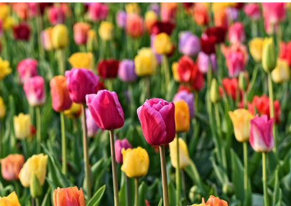

As tulipas estão entre as flores mais conhecidas e admiradas no mundo todo. Sua origem ainda é muito discutida, sendo a mais provável, na Turquia, mas também há teorias que o seu cultivo começou na China, se espalhando por outros terrenos montanhosos. Atualmente, a Holanda é o país de referência dessas flores, principalmente na primavera, quando exibe diversos “tapetes” de flores de várias cores e espécies.
O maior significado dessa flor é o de “amor perfeito“, mas eles podem receber outras definições conforme suas cores, como as tulipas vermelhas, que representam o amor verdadeiro. Já as brancas são indicadas para quem quer pedir desculpas a alguém. As flores de cor amarela são ideais para usar na decoração de casas e escritórios, pois transmitem alegria, energia positiva e sucesso ao lugar em que foram colocadas.